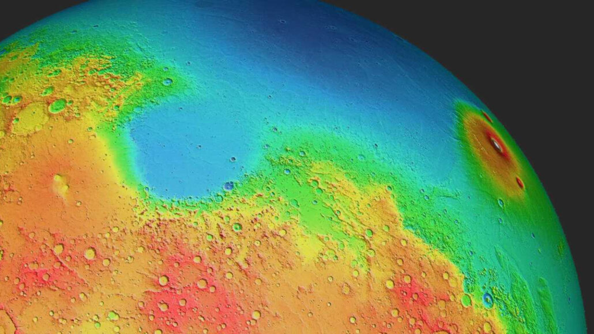

Planetary scientists now know how thick the Martian crust is, thanks to
the strongest Marsquake ever observed. On average, the crust is between 42
and 56 kilometers thick, researchers report in a paper to appear in
Geophysical Research Letters. That’s roughly 70 percent thicker than the
average continental crust on Earth. The measurement was based on data from
NASA’s InSight lander, a stationary seismometer that recorded waves
rippling through Mars’ interior for four Earth years. Last May, the entire
planet shook with a magnitude 4.7 quake that lasted more than six hours
(SN: 5/13/22). “We were really fortunate that we got this quake,” says
seismologist Doyeon Kim of ETH Zurich.
InSight recorded seismic waves from the quake that circled Mars up to
three times. That let Kim and colleagues infer the crust thickness over
the whole planet. Not only is the crust thicker than that of the Earth and
the moon, but it’s also inconsistent across the Red Planet, the team
found. And that might explain a known north-south elevation difference on
Mars. Topological and gravity data from Mars orbiters have shown that the
planet’s northern hemisphere is substantially lower than the southern one.
Researchers had suspected that density might play a part: Perhaps the
rocks that make up northern Mars have a different density than those of
southern Mars. But the crust is thinner in the northern hemisphere, Kim
and colleagues found, so the rocks in both hemispheres probably have the
same average densities. That finding helps scientists narrow down the
explanations for why the difference exists in the first place. Knowing the
crust’s depth, the team also calculated that much of Mars’ internal heat
probably originates in the crust. Most of this heat comes from radioactive
elements such as potassium, uranium and thorium. An estimated 50 to 70
percent of those elements are probably in the crust rather than the
underlying mantle, computer simulations suggest. That supports the idea
that parts of Mars still have volcanic activity, contrary to a long-held
belief that the Red Planet is dead